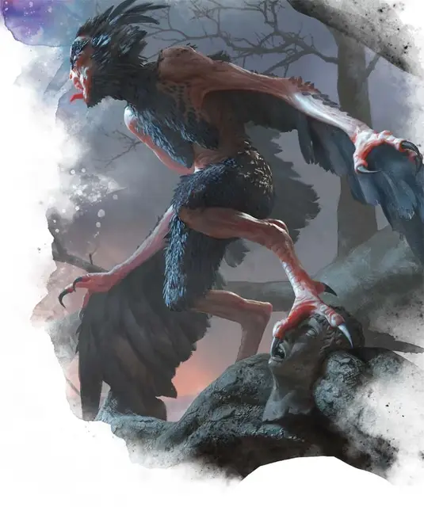

Гарпия кровавой дани
Blood-Toll Harpy
Средний Монстр, хаотично-злой

Класс Доспеха 11
Хиты 9 (2к8)
Скорость 20 футов, летая 40 футов
| мод | спас | ||
|---|---|---|---|
| СИЛ | 12 | +1 | +1 |
| ЛОВ | 13 | +1 | +1 |
| ТЕЛ | 10 | +0 | +0 |
| мод | спас | ||
|---|---|---|---|
| ИНТ | 6 | −2 | −2 |
| МДР | 11 | +0 | +0 |
| ХАР | 13 | +1 | +1 |
Навыки Запугивание +3
Чувства пассивное Восприятие 10
Языки Общий
Опасность 1/8 (25 опыта)
Бонус мастерства +2
Особенности
Кровавое бешенство. Гарпия совершает с преимуществом броски рукопашных атак по существам, у которых хиты ниже максимума.
Темная преданность. Гарпия совершает с преимуществом спасброски от испуга и очарования.
Действия
Мультиатака. Гарпия совершает две рукопашные атаки: одну Укусом и одну Когтями.
Укус. . Рукопашная атака оружием: +3 к попаданию, досягаемость 5 футов, одна цель. Попадание: 3 (1к4 + 1) колющего урона.
Коготь. . Рукопашная атака оружием: +3 к попаданию, досягаемость 5 футов, одна цель. Попадание: 3 (1к4 + 1) рубящего урона.
Описание
Кровожадные стаи гарпий собираются в мрачных местах по всему Теросу, охотясь на любого, кто проходит мимо. Многие торговцы регулярно терпят убытки от когтей гарпий, обычные потери часто называют "кровавой данью".
Гарпии
Жестокие, трупоеды, гарпии бесконечно ищут свою следующую еду, не заботясь о том, является ли она живой или мертвой. С одинаковым рвением эти злобные падальщики нападают на путешественников или раскапывают свежие могилы, лишая тела богатств и плоти. Затем они уносят любые сокровища или привлекательные кости, которые находят, в вонючие гнезда, расположенные в тесных пещерах или на гнилых деревьях.